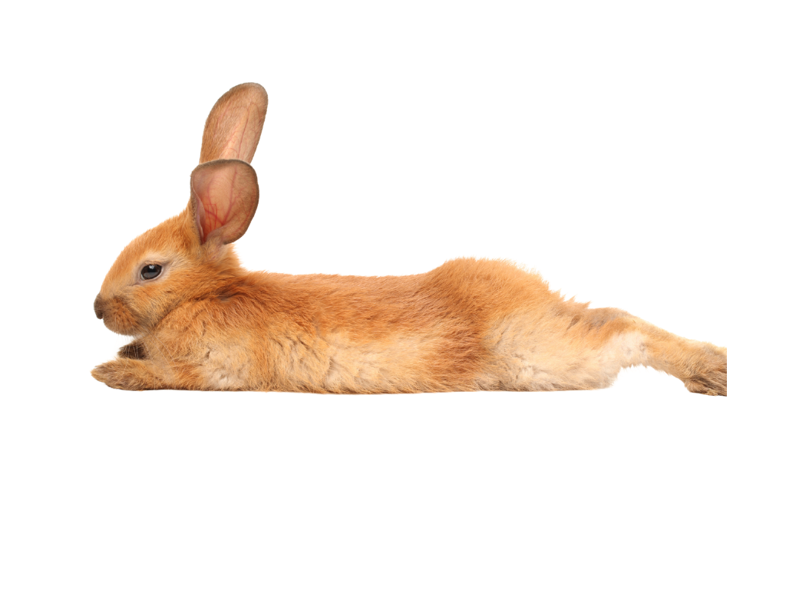
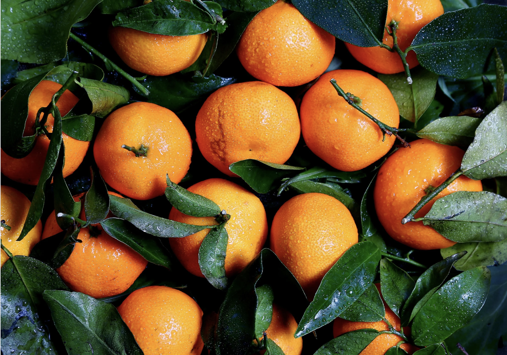
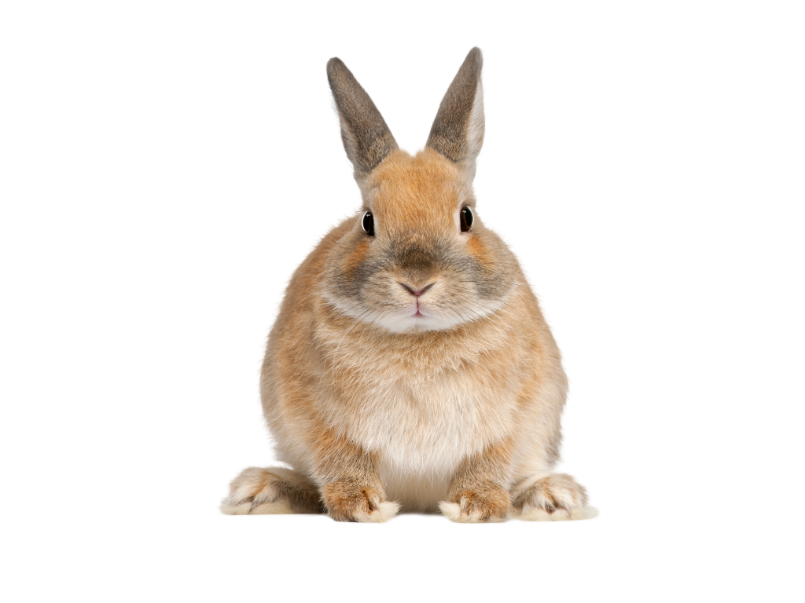
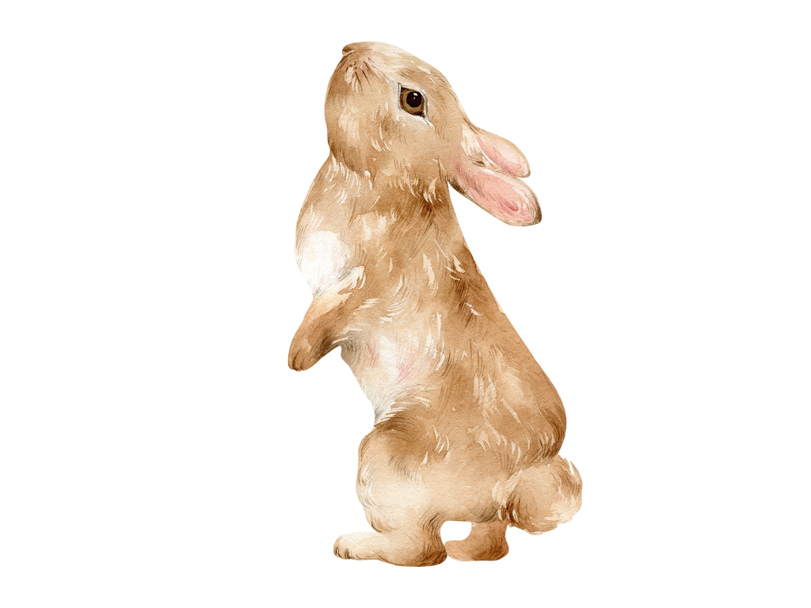
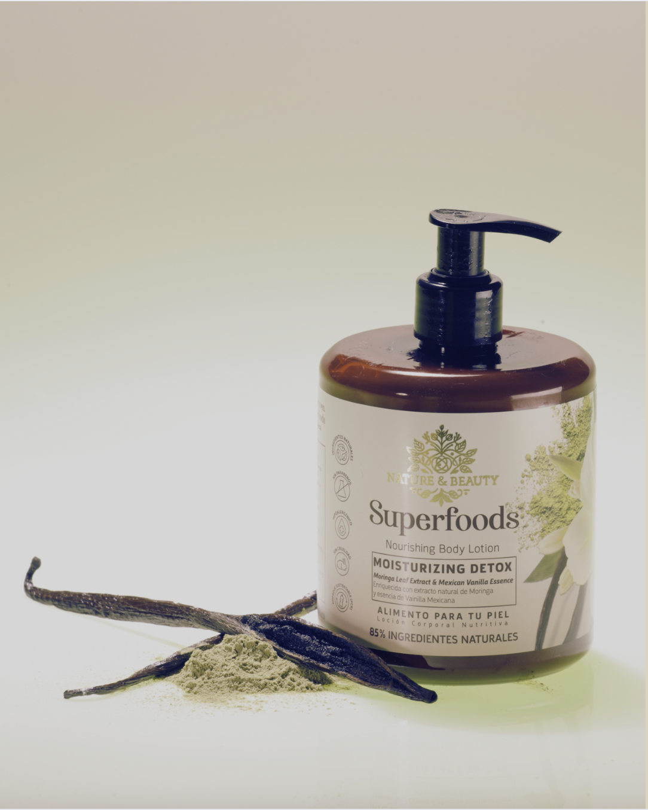
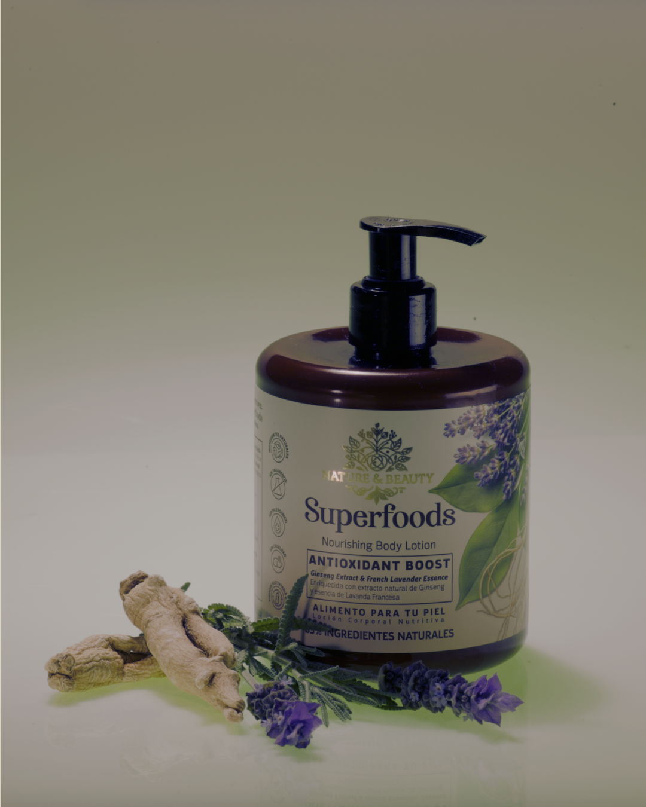
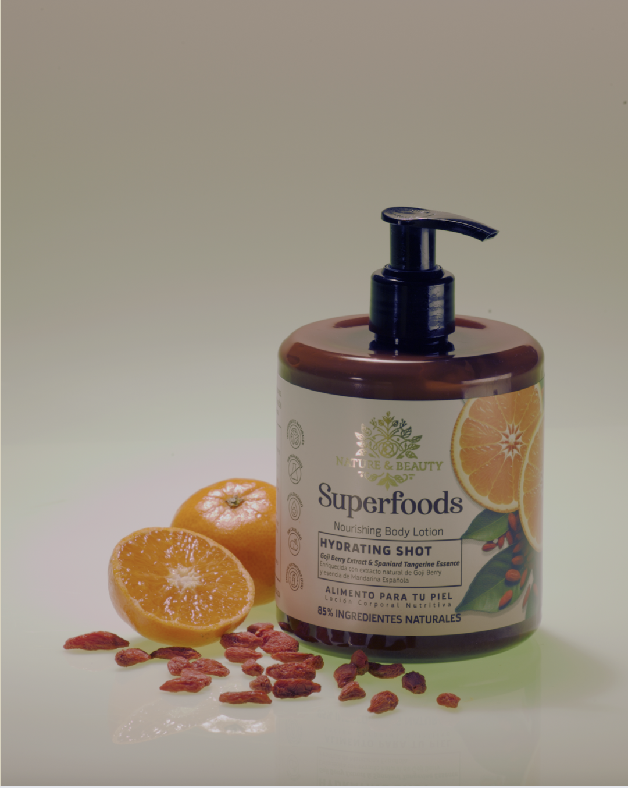

Nature Beauty Superfoods esta formulada con un enfoque basado en la naturaleza. El 85% de los ingredientes provienen de fuentes naturales como extractos botánicos, aceites vegetales y otros derivados de origen vegetal. Cuidadosamente seleccionados por sus beneficios cosméticos y su compatibilidad con la piel. Seguimos los lineamientos internacionales, que define cómo calcular el porcentaje de naturalidad basado en el origen y procesamiento de cada ingrediente (incluyendo el agua).

El 85% de nuestros ingredientes provienen de fuentes naturales como extractos botánicos, aceites vegetales y otros derivados de origen vegetal. Cuidadosamente seleccionados por sus beneficios cosméticos y su compatibilidad con la piel.


En lugar de parabenos, usamos conservantes suaves y seguros, ampliamente aceptados por normativas nacionales e internacionales. Nuestros productos mantienen su efectividad sin comprometer la salud de tu piel.
Nuestra fórmula ha sido desarrollada con un enfoque dermatológicamente responsable, con el objetivo de minimizar el riesgo de alergias e irritaciones. Seleccionamos cuidadosamente los ingredientes, excluyendo aquellos reconocidos como irritantes.

Estamos comprometidos con el bienestar animal. No realizamos ni encargamos pruebas en animales para ninguno de nuestros productos o ingredientes, de acuerdo con las regulaciones vigentes y los principios de la experimentación ética.

Nuestros envases están fabricados con material reciclado post-consumo (PCR), lo que significa que se aprovechan plásticos ya utilizados para darles una nueva vida, reduciendo así el impacto ambiental del producto.

Extracto de Moringa y Vainilla Mexicana
Una loción corporal nutritiva que combina el poder desintoxicante de la moringa con el aroma cálido y envolvente de la vainilla mexicana. Perfecta para nutrir y purificar tu piel mientras disfrutas de su fragancia relajante.

Ginseng y Lavanda Francesa
Descubre la calma y serenidad con nuestra loción corporal que combina el poder antioxidante del ginseng con el aroma floral de la lavanda francesa. Perfecta para nutrir y revitalizar tu piel.

Bayas de Goji y Mandarina Española
Energiza tu día con la frescura cítrica de la mandarina española combinada con el poder hidratante de las bayas de goji. Esta loción corporal revitalizante despierta tus sentidos y nutre tu piel.